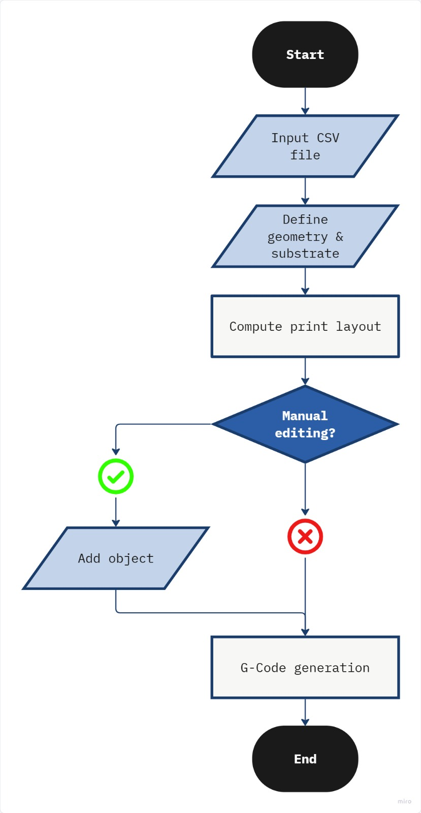
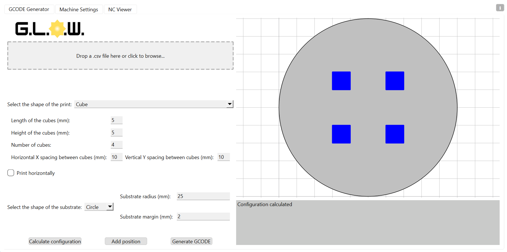
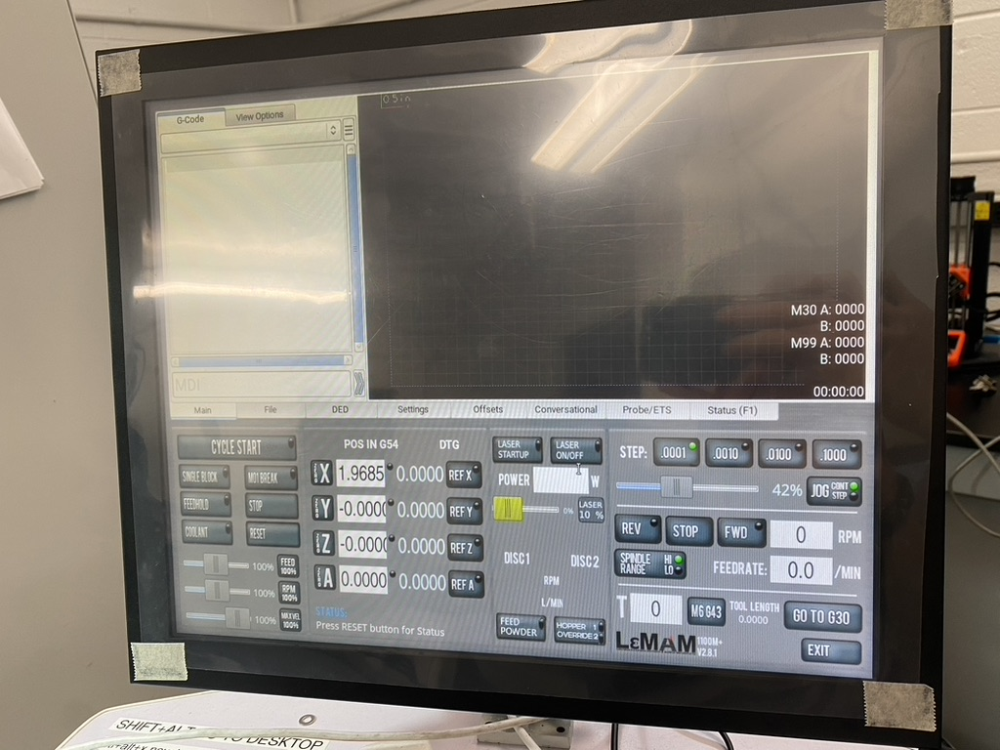
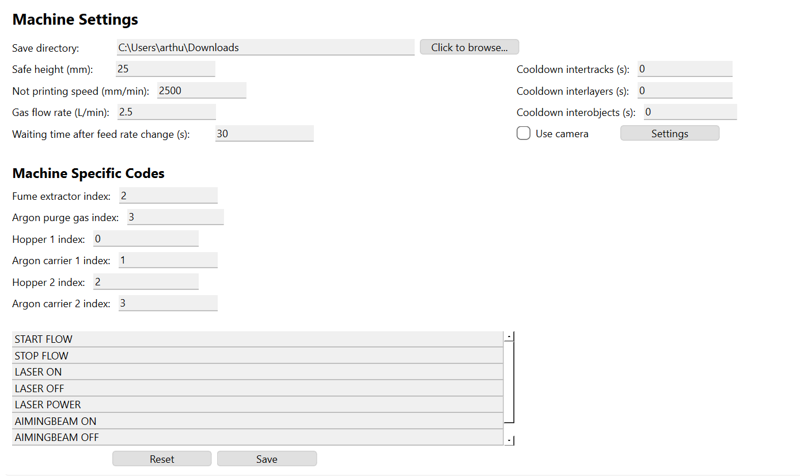
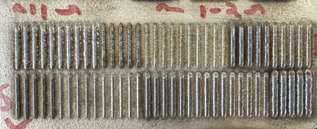
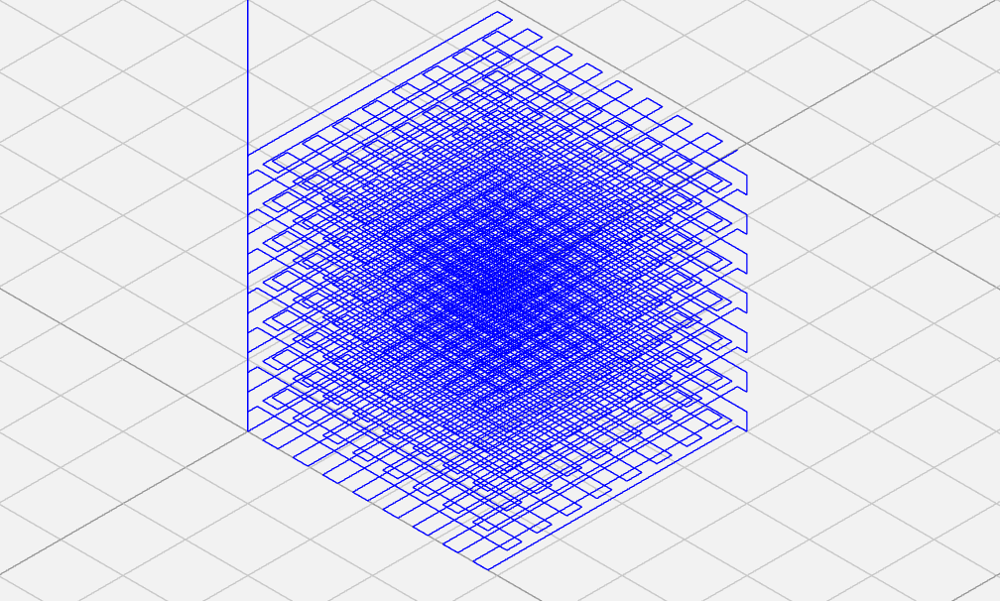

Overview
What is GLOW?
GLOW is an open-source research workflow automation desktop application for generating G-Code used in Direct Energy Deposition (DED) additive manufacturing. It was developed for the Laboratory for Extreme Mechanics & Additive Manufacturing (LEMAM), where researchers had previously configured, generated, and verified G-Code by hand for every new print. That process was slow, prone to error, and difficult to reproduce across experiments.
The application supports three print geometries, two substrate configurations, ten configurable print parameters, and eleven preprogrammed machine-specific codes. Researchers define an experiment as a row in a CSV file, and GLOW produces a complete, machine-ready batch of G-Code in seconds. Generated toolpaths can be inspected in integrated NC Viewer prior to production.
Problem Statement
The cost of manual experiment setup
DED parameter studies require testing many combinations of laser power, scanning speed, and powder feed rate across multiple geometries. Writing G-Code by hand for each combination meant every new experiment cost hours of setup before a single track could be printed. Each hand-edited file also introduced a new opportunity for transcription error or an inconsistent toolpath.
Core constraint: geometric parameters such as track width, height, and layer overlap are not always known in advance. They depend on process parameters in ways that resist simple analytical prediction, particularly for new alloy compositions with no prior print history.
The objective was not to remove the researcher from the process, but to eliminate the repetitive, mechanical parts of G-Code authoring. Testing a new parameter set needed to become a matter of adding a row to a spreadsheet rather than writing a new program by hand.
Objectives
What the tool had to do
Design Process
From manual files to a production tool
Mapping the manual workflow
Reviewed LEMAM's existing process to identify each manual decision made per print, including toolpath direction, object spacing, cooldown timing, and machine-specific command syntax. These decisions formed the basis of the CSV schema and the ten configurable print parameters the application would need to support.
Substrate fitting and layout engine
Developed placement logic that fits a bounding rectangle of objects against a rectangular or circular substrate, favoring a filled grid arrangement. An interactive plot was added to allow researchers to override placement manually by selecting a position on the layout.
Toolpath rules per geometry
Implemented distinct toolpath logic for each supported geometry. Single tracks and thin walls print bottom to top, alternating direction each layer. Cubes print in a zigzag pattern and rotate ninety degrees between layers, resuming from the endpoint of the previous layer to minimize unnecessary travel moves.
Machine learning integration
Integrated a machine learning model, built on the AIDED framework and trained on single-powder print data, to predict track width, height, and layer overlap when absent from the input CSV. Predicted values are written to a separate output file, keeping measured and inferred data clearly distinguished.
Deployment as a GUI application
Built the interface with PyQt6 and packaged it as a zero-dependency desktop application using PyInstaller, distributed via an Inno Setup installer. This eliminated the need for lab workstations to maintain a separate Python environment or manage package dependencies.
Architecture
How the pipeline works

Three-stage pipeline
The input stage parses the CSV, validates required columns, and
flags rows with missing geometric parameters for ML prediction.
The core stage handles substrate fitting, per-geometry toolpath
generation, and substitution of the eleven preprogrammed
machine-specific codes. The output stage writes the final
.gcode file and hands it to NC Viewer for
simulation.
Machine settings, including command codes, cooldown sequences, and camera timing, are stored separately from the toolpath logic. As a result, supporting a new DED system requires updating a configuration file rather than modifying the application's source code.

GLOW main window. Left: geometry and substrate parameters. Right: interactive configuration plot with click-to-place positioning.
Challenges
Where the hard problems were
Grid fitting under two substrate types
Rectangular and circular substrates require different fitting logic; a grid that fits inside a rectangle does not necessarily fit inside a circle of equivalent area. This was resolved by bounding all objects in a rectangle grid first, then evaluating that rectangle's fit against each substrate type independently.
Continuity across layers
Cube geometries rotate ninety degrees between layers while needing to begin each new layer at the endpoint of the previous one, in order to avoid unnecessary travel moves. This required tracking toolpath endpoint state across the full print rather than within a single layer.
Predicting geometry from process parameters
Track width, height, and layer overlap depend on laser power, scan speed, and feed rate in ways that do not reduce to a simple formula. Rather than requiring every researcher to know these values in advance, missing values are predicted by an ML model and clearly separated from user-provided input in the output file.
Porting from Python to C++
The full Python distribution reached 1.6 GB, which was impractical for deployment across multiple lab workstations. The application was ported to C++ using Qt Creator, producing a 270 MB optimized build with a 40 percent improvement in runtime performance relative to the lightweight Python build, and reducing installation time from roughly one minute to nearly instantaneous.
Results
Measured outcomes
5 → 1
Button presses to open G-Code generator
6x
Smaller app size, full to optimized build
40%
Runtime improvement over lite version
87%
Installation time reduction, full to optimized build
9 → 0
Required dependencies installed
GLOW converted experiment setup from a manual, individually verified process into a repeatable pipeline. Batches of G-Code that previously required careful, one-off authoring can now be generated directly from a spreadsheet of parameters. This gain in throughput directly supported LEMAM's research into in-situ compositional modification and functionally graded materials (FGMs), where evaluating many alloy combinations quickly is essential. The application is distributed as a standalone installer, an open-source Python package, and an optimized C++ build, and remains in active daily use at LEMAM.
Gallery
Build documentation

Original G-Code generator interface in LEMAM
Machine settings page
Sample printed tracks
Generated G-Code toolpath previewed in NC ViewerLessons Learned
What I'd do differently
Separate machine dialect from toolpath logic from the outset. Keeping machine-specific command codes fully external to the toolpath generator made it considerably easier to support additional DED systems later. This is a decision I would make earlier in a future project.
Keep predicted and measured data visibly distinct. Writing ML-predicted parameters to a separate output file, rather than filling gaps in the original CSV silently, proved important for researchers who needed to know precisely which values were measured and which were inferred.
Build the manual override alongside the automated path. The automated grid-fitting logic does not cover every layout a researcher might want. Adding click-to-place positioning early kept the tool useful for cases the algorithm did not anticipate.
Plan for deployment constraints before the first release. The 1.6 GB footprint of the initial Python build was manageable for one machine but impractical to distribute across the lab. Porting to C++ solved this, but planning for binary size and install time earlier would have avoided a full rewrite.